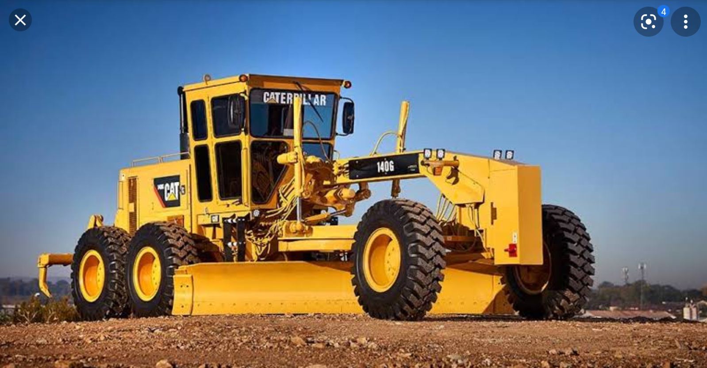
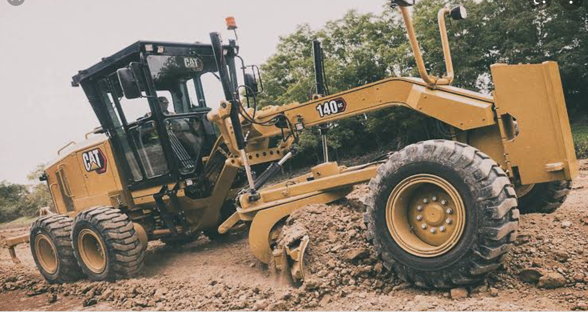
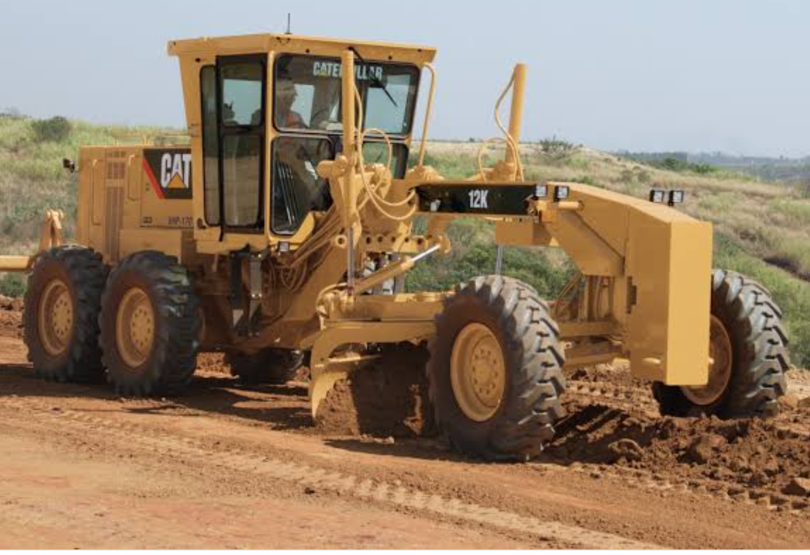
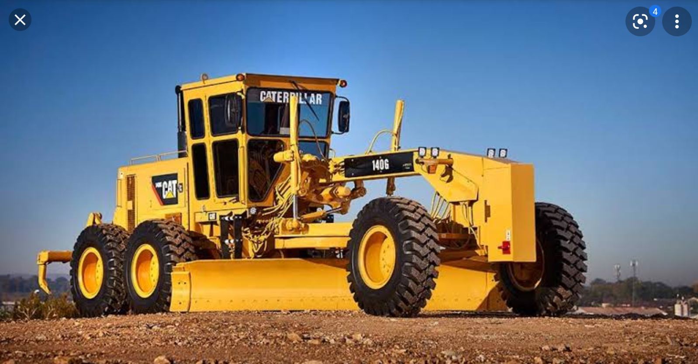
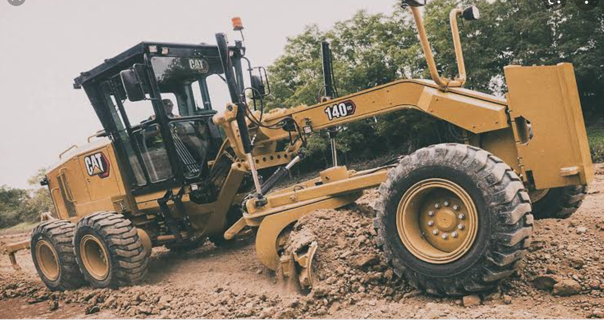
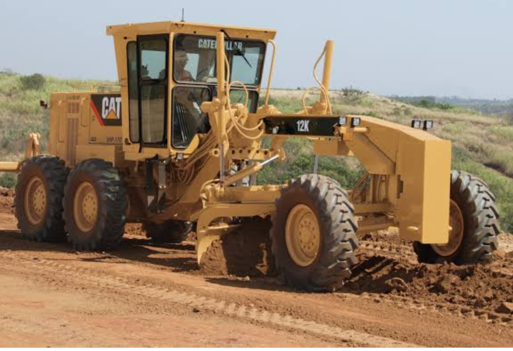
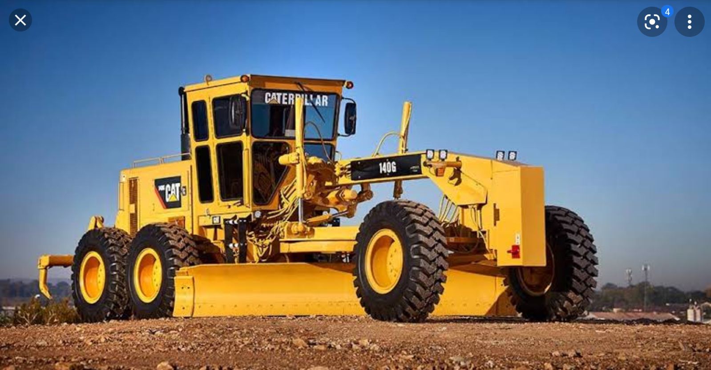
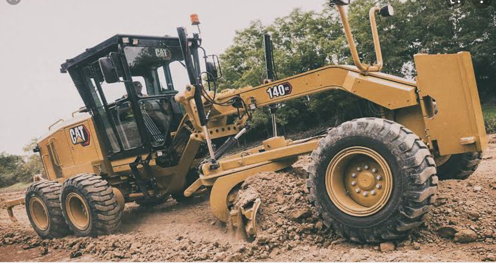
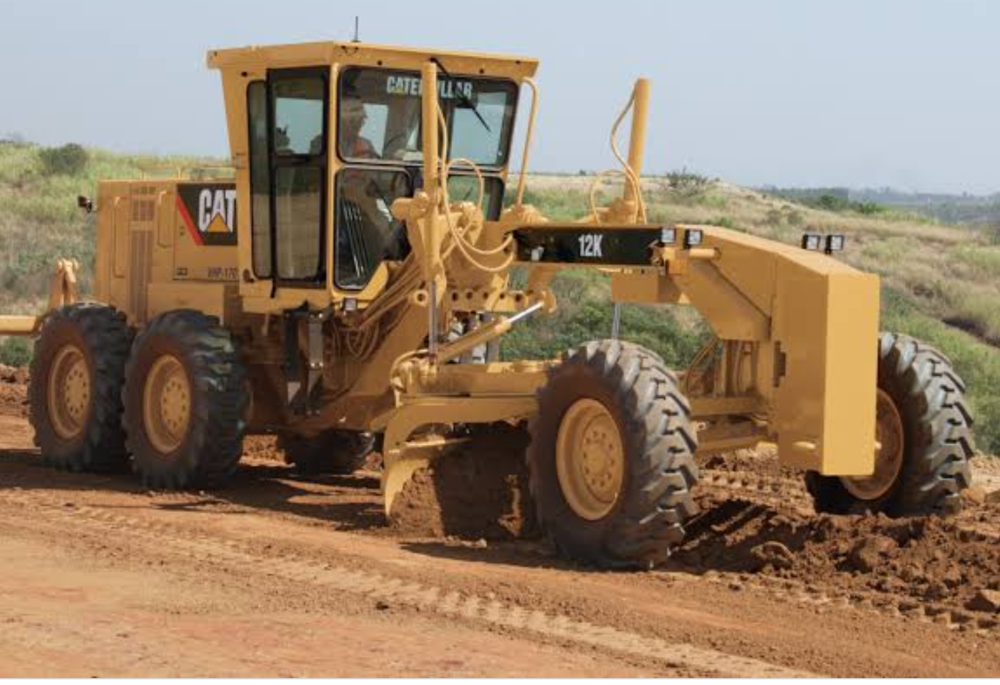

A motor grader is essential to the process of building a road. This heavy machinery is one of the components that flattens an area of dirt in order to build a road. A grader ensures an even grade thanks to a metal plate that flattens the areas it passes over. It’s typically six-wheeled and has an elongated nose where the flattening metal plates sit.



Stock Availability: 12
| Base Power | Displacement | Gross Vehicle Weight | Engine Model |
|---|---|---|---|
| 93kW | 7.2 l | 13833 Kg | Cat C7 ACERT |